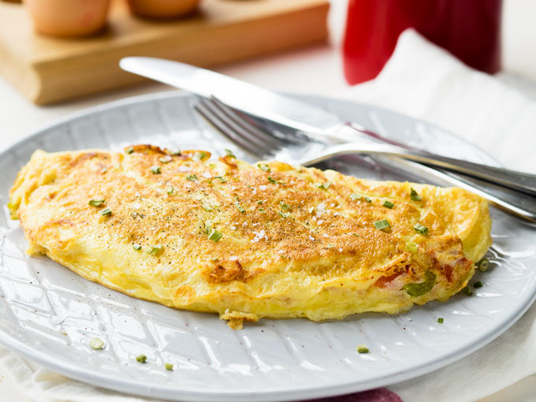

Tuna Omelette!

Ingredients:
- 1 pot of tuna
- 3 eggs
- ½ chopped tomato
- ¼ chopped red pepper
- 1 chopped spring onion
- ¼ cup of chopped corriander
- Salt
- Ground pepper
- Chilli flakes(optional)
- 2 heaped talespoon of flour
- 2 tablespoon of sunflower oil
Instructions:
- Put tomatoes,red pepper, spring onion and corriander into a bowl
- Add the tuna into the bowl and break down into small pieces
- Add the 3 eggs into the bowl
- Add salt, ground pepper, and chilli flakes(optional) to your taste
- Add the 2 heaped tablespoons of flour
- Mix all the contents with a spoon thoroughly
- Prep the pan, add the oil and let it heat for 20-30
- Pour the contents of the bowl into the pan and spread evenly around the ban
- Let the omlette cook on one side on low-medium heat, flip once that side has reached a golden colour(about 3-4 mins)
- Do the same for the other side and voilà!